Residue 4: conflict
Recorded counts {'black': 2, 'red': 2}. No majority correction; no unknown filled.
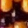
K-0603-1624
recorded black; A=2084 K-1296-1491
K-1296-1491
recorded black; A=1876 R332-R-0196-0188
R332-R-0196-0188
recorded red; A=2500REC266-P054157
recorded red; A=2292Residue 22: conflict
Recorded counts {'black': 4, 'red': 1}. No majority correction; no unknown filled.
 D40-K-1772-1751
D40-K-1772-1751
recorded black; A=1686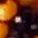
K-0990-2705
recorded black; A=1270K-1219-2134
recorded black; A=1478 MAT25-K-1538-2998
MAT25-K-1538-2998
recorded black; A=1062NEW-1251-1537
recorded red; A=1894Residue 27: conflict
Recorded counts {'black': 3, 'red': 2}. No majority correction; no unknown filled.
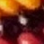
D40-K-2081-2611
recorded black; A=859MAT25-K-2270-1942
recorded black; A=651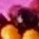
NEW-1221-2081
recorded red; A=1483NEW-1530-3049
recorded black; A=1067NEW-2185-1265
recorded red; A=443Residue 34: conflict
Recorded counts {'black': 4, 'red': 1}. No majority correction; no unknown filled.
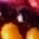
D40-K-1248-2087
recorded black; A=1490K-1508-3038
recorded black; A=1074MAT25-K-2054-2616
recorded black; A=866NEW-2259-1961
recorded red; A=658NEW-946-2684
recorded black; A=1282Residue 43: observed
Recorded counts {'black': 2}. No majority correction; no unknown filled.
K-0471-1609
recorded black; A=2123 K-1171-1518
K-1171-1518
recorded black; A=1915 Residue 62: observed
Recorded counts {'yellow': 3}. No majority correction; no unknown filled.
C-0403-1597
recorded yellow; A=2142 C-1116-1554
C-1116-1554
recorded yellow; A=1934 C-1777-1612
C-1777-1612
recorded yellow; A=1726 Residue 75: observed
Recorded counts {'black': 2}. No majority correction; no unknown filled.
 K-1069-1565
K-1069-1565
recorded black; A=1947 K-1740-1575
K-1740-1575
recorded black; A=1739Residue 82: observed
Recorded counts {'black': 2}. No majority correction; no unknown filled.
 K-1037-1557
K-1037-1557
recorded black; A=1954 NEW-339-1556
NEW-339-1556
recorded black; A=2162Residue 83: conflict
Recorded counts {'yellow': 5, 'red': 2}. No majority correction; no unknown filled.
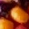
C-0315-0867
recorded yellow; A=2371 C-0870-0396
C-0870-0396
recorded yellow; A=2579 C-1032-1519
C-1032-1519
recorded yellow; A=1955C-1582-0235
recorded yellow; A=83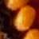
E5-0355-1525
recorded yellow; A=2163R332-R-0037-0040
recorded red; A=499 REC266-P035619
REC266-P035619
recorded red; A=291Residue 86: conflict
Recorded counts {'black': 4, 'red': 1}. No majority correction; no unknown filled.
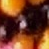
D40-K-1329-3022
recorded black; A=1126 D40-K-1424-2037
D40-K-1424-2037
recorded black; A=1542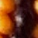
K-1943-2759
recorded black; A=918 NEW-2237-2128
NEW-2237-2128
recorded black; A=710NEW-903-2501
recorded red; A=1334Residue 89: observed
Recorded counts {'black': 3}. No majority correction; no unknown filled.
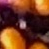
D40-K-1014-1544
recorded black; A=1961NEW-317-843
recorded black; A=2377 NEW-326-1528
NEW-326-1528
recorded black; A=2169Residue 92: conflict
Recorded counts {'black': 4, 'red': 1}. No majority correction; no unknown filled.
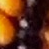
K-1937-2783
recorded black; A=924NEW-1440-2018
recorded black; A=1548NEW-2060-796
recorded black; A=300NEW-2235-1476
recorded red; A=508RF70T-K-2247-2151
recorded black; A=716Residue 101: conflict
Recorded counts {'yellow': 3, 'red': 1}. No majority correction; no unknown filled.
C-0272-1512
recorded yellow; A=2181 C-0990-1588
C-0990-1588
recorded yellow; A=1973 C-1677-1513
C-1677-1513
recorded yellow; A=1765REC266-P100583
recorded red; A=1557 Residue 127: conflict
Recorded counts {'yellow': 2, 'red': 1}. No majority correction; no unknown filled.
 C-0900-1612
C-0900-1612
recorded yellow; A=1999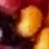
C-1592-1479
recorded yellow; A=1791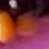
R332-R-0125-0118
recorded red; A=1583Residue 131: conflict
Recorded counts {'black': 3, 'red': 1}. No majority correction; no unknown filled.
 D40-K-2217-2280
D40-K-2217-2280
recorded black; A=755K-1841-2884
recorded black; A=963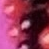
NEW-2100-921
recorded black; A=339 NEW-2251-1608
NEW-2251-1608
recorded red; A=547Residue 138: conflict
Recorded counts {'black': 4, 'red': 1}. No majority correction; no unknown filled.
Residue 140: observed
Recorded counts {'black': 2}. No majority correction; no unknown filled.
K-1543-1467
recorded black; A=1804 NEW-855-1626
NEW-855-1626
recorded black; A=2012 Residue 147: observed
Recorded counts {'black': 2}. No majority correction; no unknown filled.
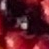
K-0824-1612
recorded black; A=2019 K-1518-1455
K-1518-1455
recorded black; A=1811Residue 154: conflict
Recorded counts {'black': 3, 'red': 1}. No majority correction; no unknown filled.
 K-0802-1592
K-0802-1592
recorded black; A=2026NEW-1493-1439
recorded black; A=1818 NEW-199-1335
NEW-199-1335
recorded black; A=2234NEW-451-650
recorded red; A=2442Residue 157: conflict
Recorded counts {'black': 4, 'red': 1}. No majority correction; no unknown filled.
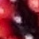
D40-K-2191-2368
recorded black; A=781E9-2263-1691
recorded red; A=573 K-1774-2936
K-1774-2936
recorded black; A=989R332-B-0029-0027
recorded black; A=365R332-B-0109-0107
recorded black; A=1405Residue 169: conflict
Recorded counts {'black': 6, 'red': 1}. No majority correction; no unknown filled.
 K-1172-0348
K-1172-0348
recorded black; A=2665K-1845-0412
recorded black; A=169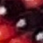
K-2161-1039
recorded black; A=377 K-2209-2420
K-2209-2420
recorded black; A=793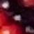
K-2303-1728
recorded black; A=585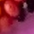
R332-R-0077-0077
recorded red; A=1001 REC266-P031642
REC266-P031642
recorded black; A=2457Residue 184: conflict
Recorded counts {'black': 4, 'red': 1}. No majority correction; no unknown filled.
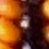
D40-K-1701-1890
recorded black; A=1640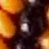
K-1072-2198
recorded black; A=1432 K-1683-2959
K-1683-2959
recorded black; A=1016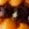
MAT25-K-1060-2836
recorded black; A=1224 NEW-2136-2445
NEW-2136-2445
recorded red; A=808Residue 186: observed
Recorded counts {'black': 2}. No majority correction; no unknown filled.
 D40-K-1384-1467
D40-K-1384-1467
recorded black; A=1850K-0693-1626
recorded black; A=2058Residue 190: conflict
Recorded counts {'black': 2, 'yellow': 2, 'red': 2}. No majority correction; no unknown filled.
Residue 196: conflict
Recorded counts {'yellow': 1, 'black': 3, 'red': 1}. No majority correction; no unknown filled.
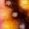
E5-2272-1815
recorded yellow; A=612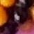
K-1663-3006
recorded black; A=1028 MAT25-K-2142-2497
MAT25-K-2142-2497
recorded black; A=820 NEW-1092-2152
NEW-1092-2152
recorded black; A=1444 NEW-2156-1135
NEW-2156-1135
recorded red; A=404